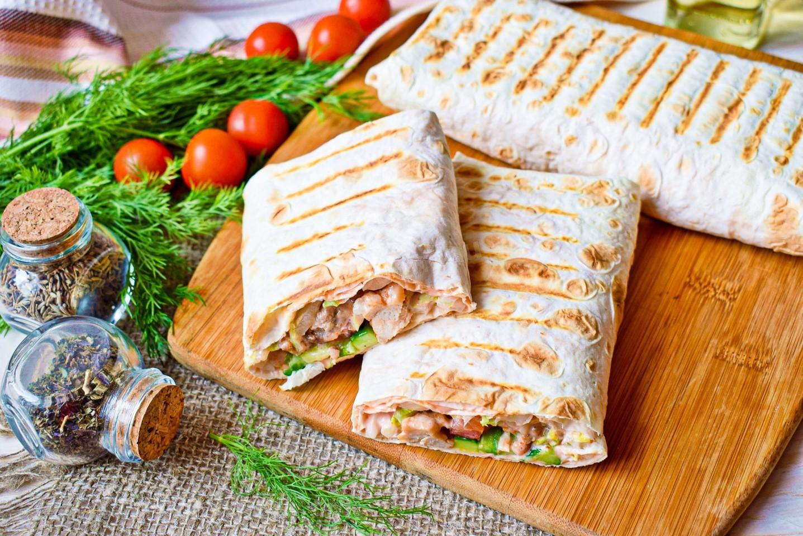

Shaurma

A simple and quick recipe for delicious shaurma.
Shaurma is a very tasty dish. And cooked at home, it is also useful.
Ingredients
- Chicken fillet
- Cucumber
- Tomato
- Cabbage
- Mayo
- Lavash
Steps
- Vegetables - cucumber and tomato wash well.
- Cut the chicken fillet into thin strips and fry in a hot frying pan with the addition of a small amount of vegetable oil.
- Shred the cabbage finely.
- Cucumber and tomato cut into thin strips.
- Spread a sheet of pita bread on the table and brush it with the prepared mayonnaise sauce.
- Put the fried meat, cucumbers and tomatoes.
- Fry the finished shawarma in a dry frying pan or on the grill on both sides.
Return to home page